CATALOGUE
OF THE
COLLECTION OF LONDON
ANTIQUITIES
IN THE
GUILDHALL MUSEUM,
Prepared under the Direction of the
LIBRARY COMMITTEE
OF THE
CORPORATION OF THE CITY OF LONDON.
SECOND EDITION.
LONDON.
1908.
Extracts
|
p.32-33 |
ROMAN SHOES AND SANDALS. | |
| 8 | Child's shoe; the heel is of open-work, terminating in loops to fasten over the instep; 6 in. l. Pl. C, 15. London Wall. |
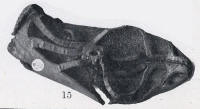 |
| 31 | Child's sandal; the heel is pierced with small squares, the front is pierced with large loops; 5 in. l. Pl. C, 14. London. |
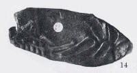 |
|
p.142-143 |
MEDI�VAL BLACK JACKS AND CLOGS. | |
| CLOGS | ||
| 9 | Clog front, in elaborately pierced leather, the toe cut away to allow the point of the shoe to project through it; the sole was of wood, now missing, the long nails which fastened the leather to time sole being still in position ; temp. Edward III ; 4� x 4 in. Pt. LXXV, 8. Mansion House. |
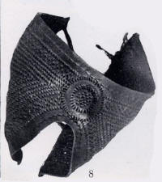 |
| 10 | Clog, leather, imperfect XIII- XIV Cent. | |
| 11 | Clog, leather, with toe and heel straps; XIV-XV Cent. ; 12� in. l. Pl. LXXVI, 7. |
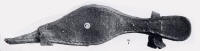 |
| 12 | Clog, leather, for a pointed shoe, portion only; XIV-XV Cent.; 9 1/8 in. l. | |
| 13 | Clog, wooden, the leather latchets decorated with stamped designs XIV-XV Cent.; 10� in. 1. Pl. LXXVI, 9. Temple Gardens, 1868 ? |
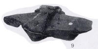 |
| 14-16 | Clogs, wooden (three), XIV-XV Cent. ; 9 and 9� in. l.; Temple Gardens. | |
| 17-18 | Clogs (two), soles only, one with toe strap; XIV-XV Cent. ; 10 1/8 and 11 in. l. Monkwell Street. | |
| 19 | Clog, leather, with nailed heel and heel straps ; XV Cent. ; 9� in. l. | |
| 20-21 | Clogs, leather, two, portions only ; XV Cent. ; 8� in. l. | |
| 22 | Clog, wooden, made in two overlapping pieces, with leather hinge; leather heel and toe fittings; XV Cent. ; 10� in. l. Pl. LXXVI, 5. Monkwell Street. |
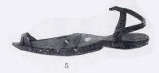 |
| 23 | Clog, wooden, made in two pieces, with leather hinge and heel; XV Cent.; 9� in, l. | |
| 24 | Clog, wooden, with large leather loop for toe, and leather latchet on one side; XVI Cent.; 8 in. l. | |
| 25-26 | Clogs, leather (a pair), the sides and latchets being covered with olive-green silk, edged with fringe, through which runs a thin metal band ; XVII Cent. ; 7� in. l. | |
| 27 | Clog, wooden, with circular hollow for heel and raised instep XVII Cent. ; 10 in. l. Site of New Law Courts. | |
| 28 | Clog, leather, the high portion within the instep being formed by a cork pad; XVII-XVIII Cent. ; 7� in. l. Thames Street. | |
| 29 | Clog, wooden, formed of one piece of wood, the support to fit the shoe beneath the raised part of the instep is 2 in. h., the cavity for the heel being 1� in. ; it has leather latchets; 7� in. l. ; XVII- XVIII Cent. Saint Pauls Churchyard. | |
| 30 | Clog, wooden, somewhat similar; XVII-XVIII Cent.; 8 in. l. Old Swan Lane. | |
| 31 | Clog, wooden, the toe and heel raised up with iron studs: the leather tag is perforated with nine holes, and is stamped with small floral devices, and the letters F. G. and other letters, now indistinct; XVII-XVIII Cent. 7 in. l. Moorfields. | |
| 32 | Clog, wooden, with heel sockets and stamped leather latchets, with silk ribbon tie; XVII-XVIII Cent, ; 8 in. l. | |
| 33 | Clog, wooden, with leather latchets, and oval iron supports; XVIII-XIX Cent. ; 9� in. l. | |
| 34 | Clog, wooden, similar, with portion of iron beneath heel; XVIII Cent. ; 9 in. l. | |
| 35 | Clog, or patten, iron base, consisting of a large loop, with flat plates for rivets at either end ; XVI Cent. ; 9 in. l., 34 in. w. London. | |
| 36 | Clogmakers sign (?), wooden object, shaped like the sole of a shoe, with an iron staple at toe end; 15 in. l. Ludgate Hill | |
| COLLAR OF SS. | ||
| 37 | Collar of SS, fragment, with small brass letters attached ; 2 in.
l. Pl. LXXIV, 8. Thames, Brooks� Wharf, 1868. J.B.A.A., xxiii, p. 282. |
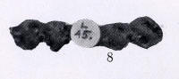 |
| p.144 | HARNESS | |
| 46 | Harness, portion, with diamond-shaped perforations; XV Cent. Pl. LXXV. 5. |
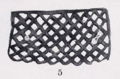 |
| 47 | Harness, breast-plate, in pierced leather, with metal mounts; XVI Cent. ; 26 x 2� in. Pl. LXXV, 7. |
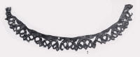 |
| 48 | Harness strap, with circular brass mounts alternating in design 9� and 1� in. l. ; two portions only. Pl. LXXIV, 2,11. |
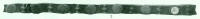 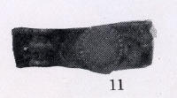 |
| 49 | Harness strap, elaborately decorated with brass mounts of alternating design ; 1 in. w., 1� in. l. ; portion only. Pl. LXXIV, 1. |
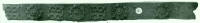 |
| 50 | Harness strap, ornamented with brass studs, beaded at the edge with copper centres ; 4 in. 1. ; portion only. Pl. LXXIV, 7. |
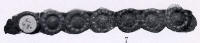 |
| 51 | Harness strap, with incised decoration, consisting of the figure of a boar and a mutilated inscription in Gothic characters "[mis]erere ...d�; 2� in. l.; portion only. Pl. LXXIV, 9. |
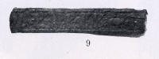 |
| 52 | Harness strap, ornamented with large brass bosses of oblong form closely placed together; the bosses have a lozenge in the centre, with hollowed circles at the angles; portion only. Pl. LXXIV, 3. |
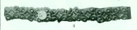 |
| 53 | Harness strap, portion, with brass mounts; 7� in. l., � in. w. Pl. LXXIV, 5. Thames, Brooks� Wharf, 1868. |
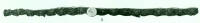 |
| 54 | Harness strap, portion, narrow, with iron buckle; XVI Cent.; 11 in. l. London Wall. | |
| 55 | Harness, portion, leather; strap, with ring at one end, to which is attached a lozenge-shaped piece of leather; XVI Cent. ; 20 in. l. Tabernacle Street, 1902. | |
| 56 | Strap, leather, with iron buckle at one end; Tudor; 12� in. l. Tabernacle Street, 1902. | |
| p.145 | JERKINS | |
| 57 | Jerkin, portion, 9� x 4 in. ; Tudor | |
| 58 | Jerkin, portion, slashed ; 7 x 3� in. Tabernacle Street. | |
| 59 | Jerkin, portion, plain ; 10� x 7 3/8 in. | |
| 60 | Jerkin, fragment, with pierced scroll work ; XV Cent. ; 21 in. l. Pl. LXXV, 2. |
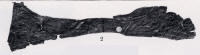 |
| 61 | Jerkin, back piece, decorated with slashed lines ; XV-XVI Cent.; 12 x 15 in. Pl. LXXV, 3. |
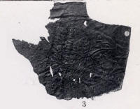 |
| 62 | Jerkin, side piece, with five bands of a perforated stellar design; XVI Cent. 23� x 8 in. | |
| 63 | Jerkin, side piece, decorated with long and short slashed lines ; XVI-XVII Cent.; 16 x 12 in. Pl. LXXV, 12. |
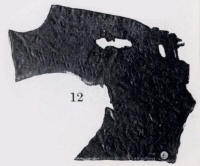 |
| 64 | Jerkin, front and sides, decorated with short slashed lines ; XVI-XVII Cent., front 16� in sq., sides 15� x 10� in. Pl. LXXV, 9-11. |
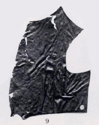 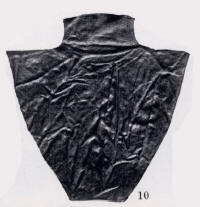 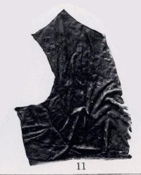 |
| 65 | Jerkin, collar; XVI-XVII Cent. 16 in. l. Pl. LXXV, 1. |
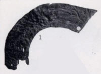 |
| 66 | Jerkin, portion, with stamped device of a six-pointed star within a circle. London Wall. |
|
p.147-149 |
SHOES | . |
| 108 | Shoe, portion. stamped and embossed design, a head on a bar within a circle or garter, with the motto, �Tout .... pou .... tout . �; all within a triangle, which also bears an inscription; temp. Edward III. Pl. LXXIV, 10. |
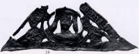 |
| 107 | Shoe, of pierced work, portion only; XIII-XIV Cent. Pl. LXXV, 6. |
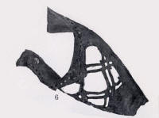 |
| 108 | Shoe, pointed, with portion of lace; XIV Cent. ; 8 1/8 in. l. Fish Street Hill. | |
| 109 | Shoe, pointed, toe-piece, with stamped open-work design; XIV Cent.; 6� in. l. Pl. LXXV, 4. |
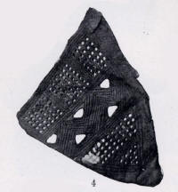 |
| 110 | Shoe, pointed, sole only; XIV Cent. ; 9� in. l. | |
| 111 | Shoe, pointed, with ring for fastening; XIV-XV Cent. ; 10� in l. Sermon Lane, 1869. | |
| 112 | Shoe, pointed, scored down front, with portion of lace ; XIV-XV Cent. ; 10� in. l. | |
| 113 | Shoe, pointed XIV-XV Cent. ; 9� in. l. Sermon Lane. | |
| 114 | Shoe, long-toed, of curved form ; XIV-XV Cent. ; 9� in. l. Pl. LXXVI, 6 .Moorfields. |
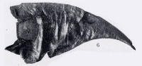 |
| 115 | Shoe, pointed, with stamped design; XIV-XV Cent. ; 11 in. l. | |
| 116 | Shoe, long-toed, upper portion XIV-XV Cent. | |
| 117 | Shoe, pointed, imperfect XIV-XV Cent. | |
| 118 | Shoe, long-toed, imperfect ; XIV-XV Cent. ; 9 in. l. Sermon Lane. | |
| 119 | Shoe, long-toed or poulam�. upper portion ; XIV-XV Cent.; 12� in. l. Pl. LXXVI, 4. Trinity Court. |
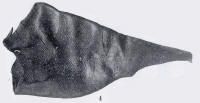 |
| 120 | Shoe, child�s, portion, with tag for fastening; XIV-XV Cent. 5� in. l. | |
| 121-125 | Shoes, pointed (five), soles only; XIV-XV Cent.; 9� in. to 11� in. l. | |
| 126 | Shoe, pointed, with lace; XV Cent. ; 11� in. l. Pl. LXXVI. 10. |
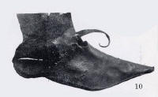 |
| 127 | Shoe, portion, nearly the whole surface perforated with small lozenge-shaped openings, giving the design the appearance of network; XV Cent. (?); 6� in. l. | |
| 128 | Shoe or clog, double sole only: XV Cent. 8� in. l. | |
| 129 | Shoe, pointed-toed; XV-XVI Cent. ; 7 in. l. | |
| 130 | Shoe, lacing up at side, with lace; XV-XVI Cent. ; 9 in. l. | |
| 131 | Shoe, wide-toed, the toe piece slashed down the centre: XV-XVI Cent. ; 8� in. l. | |
| 132 | Shoe, wide-toed, slashed across toe, with fastening strap attached in position; XV-XVI Cent. ; 9 in. l. Windmill Street. | |
| 133-134 | Shoes (two), wide-toed : with slashed toe, and strap and buckle 5� in. and 8� in. l. Windmill Street. | |
| 135 | Shoe, wide-toed, with strap: XV-XVI Cent.: 7� in. l. Windmill Street. | |
| 136 | Shoe, wide-toed (child�s) ; XV-XVI Cent.; 6� in. 1. Windmill Street. | |
| 137 | Shoe, wide-toed, portion; with slashed stellar design; XV-XVI Cent. Windmill Street. | |
| 138-139 | Shoes. child�s (two), wide-toed; with slashed and perforated toe; imperfect; XV-XVI Cent. ; 5� in. I. Windmill Street. | |
| 140 | Shoe, round-toed, upper portion, slashed for lace round ankle 5� in. l. Pl. LXXVI. 15. Sermon Lane, 1869. |
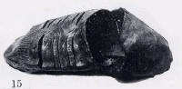 |
| 141 | Shoe. wide-toed, slashed toe-[p]iece; XV-XVI Cent.; 5� x 2� in. Pl. LXXVI, 1. |
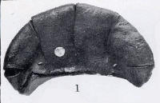 |
| 142 | Shoe, wide-toed, toe-piece only, composed of several layers of leather. the upper one slashed ; XV-XVI Cent. ; 5 in. w. Pl. LXXVI. 3. |
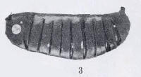 |
| 143 | Shoe, another toe-piece, similar ; XV-XVI Cent. ; 4 in. w. Pl. LXXVI, 8. |
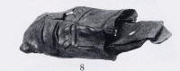 |
| 144 | Shoe, child�s; XV-XVI Cent.; 4 5/8- in. l. | |
| 145-146 | Shoes (two), sole only ; one clumped with additional sole and heel pieces, with large square-headed nails; XV-XVI Cent. ; 9 in. and 11� in. l. | |
| 147-185 | Shoes, round-toed, upper portions, with slashed, scored, and stamped designs : thirty-nine examples XVI Cent.; 5 1/8 in. to 10� in. l. Pl. LXXVI, 5,16. London Wall; Smithfield; Clerkenwell; Gracechurch Strict; Windmill Street; and other localities. |
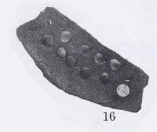 |
| 186 | Shoe, child�s, upper portion, pierced with circular holes at the toes; two specimens ; XVI Cent.; 3� in. l. and 5� in. w. Windmill Street. | |
| 187 | Shoe, broad-toed; XVI Cent. ; 9 7/8 in. l. Fish Street Hill. | |
| 188 | Shoe, slashed, with woollen lining; XVI Cent. ; 9 in. l., 4 in. w. Fish Street Hill. | |
| 189 | Shoe, front slashed with vertical, horizontal, and diagonal openings; 9 in. l., 4� in. w. Pl. LXXVI, 2. London Wall. |
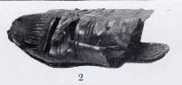 |
| 190 | Shoe, broad-toed, with frilled edge. imperfect; XVI Cent. Fish Street Hill. | |
| 191 | Shoe, child�s, of similar type, with cork inner-sole, the heel has been worn down and repaired; XVI Cent. ; 5 3/8 in. l. Pl. LXXVI. 11. Fish Street Hill. |
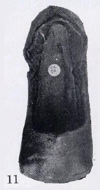 |
| 192 | Shoe, child�s, similar to the above, with a fillet across the toe-piece; 5 5/8 in. l. Pl. LXXVI, 12. Fish Street Hill. |
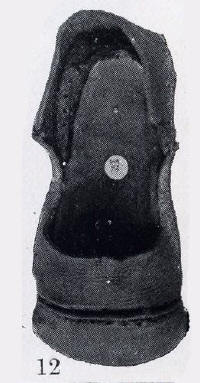 |
| 193-200 | Shoes, broad-toed, imperfect (eight specimens) : some with elaborate pierced decoration ; XVI Cent. Fish Street Hill; Mansion House; and other localities. | |
| 201 | Shoe, heel piece, ornamentally embossed and scalloped along edge; XVI-XVII Cent. | |
| 202 | Shoe, child�s, with latchets ; XVI-XVII Cent. ; 4� in. l. | |
| 203 | Shoe, square-toed, imperfect; XVII Cent. ; 6� in. l. | |
| 204 | Shoe, similar to above, imperfect; XVI-XVII Cent.; 5� in. l. | |
| 205 | Shoe, of pink figured silk, with embossed leather design down toe and high heel ; XVII Cent. ; 6 7/8 in. l. | |
| 206 | Shoe, with high leather heel ; XVII Cent.; 7� in. l. | |
| 207 | Shoe, with cork pad between welt and sole ; XVII Cent.; 8 7/8 in. l. | |
| 208 | Shoe heel, formed of nine layers of leather,
with eleven perforations for wooden pegs, four of which still remain; XVII- XVIII Cent. ; 1� in. h. |
|
| 209 | Shoe, of green cloth, with pointed turned-up toe, and high heel: XVIII Cent. ; 9 in. l | |
| 210-211 | Shoes, satin (a pair) with buckles and high wooden heels; XVIII Cent.; 8� in. l. | |
| 212 |
Boots; pair of jack boots, leather, with square toes; XVIII
Cent. ; l. of sole and heel, 11� in.; total height. 22 in.
|
|
| SWORD SHEATHS | ||
| 217 | Sword sheath (?), portion, ornamented with punctured volute pattern ; XV Cent.; 11 in l. ; Pl. LXXIV, 4, Royal Exchange. |
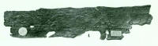 |
| 218 | Sword sheath (?), another strip of leather, similarly ornamented; XV Cent., 10 in. l. Pl. LXXIV, 6, Royal Exchange, 1841. |
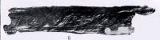 |
| 219 | Sword sheath, portion, plain type; Tudor; 28 in. l. Tabernacle Street, 1903. | |
| 220 | Sword sheath, portion, decorated with a shield, charged with chevrons, lozenges and stars ; XV Cent. ; 6 1/8 x 3 in. |
| p.158 | MEDI�VAL OBJECTS OF VARIOUS MATERIALS | . |
| 35 | Flat cap, wool, with wide fall-down rim at back; XV Cent. 11� in. diam. Pl. LXXVI, 13. Worship Street. | 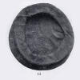 |
| 48 | Cap, wool, close-fitting hood form, with
fall-down back; XVI Cent. ; 10 in. diam. Pl. LXXVI, 14. Worship Street. This specimen probably had a flat rim, now missing. |
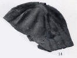 |
|
p.373 |
MEDI�VAL KNIVES, FORKS, ETC. | |
| 308 | Currier�s knife, similar [with iron blade?], maker�s mark, R; 5� in. 1. London Wall. | |
| 309 | Currier�s knife, concave edge; maker�s mark, a crown; Tudor; 6 in. 1. Providence Row, 1870. | |
| 310 | Currier�s knife, iron, with slender tang for handle and brass ferrule; maker�s mark, a cross (?); XVI Cent. ; 7� in. 1. London Wall. | |
| 311 | Currier�s knife, concave edge; maker�s mark, a flower; Tudor; 7 in. 1. London Wall. | |
| 312 | Currier�s knife, concave edge; with maker�s mark, an open hand; Tudor; 4� in. 1. Finsbury, 1870. | |
| 313 | Currier�s knife, similar, wooden handle; maker�s mark; 5� in. 1. Pl. LXXXIV, 4. Finsbury. | 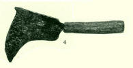 |
| 314 | Currier�s knife, concave edge, wooden handle; maker�s mark; Tudor; 4� in. l. Finsbury. | |
| 315 | Currier�s knife, concave edge, wooden handle; maker�s mark, two symbols; Tudor; 4 � in. l. London Wall. | |
| 316 | Knife, with slender tapering blade, wooden handle and brass butt; XVI Cent. London. | |
| 317 | Currier�s knife, iron, with maker�s mark; Tudor; 4 7/8 in. l. London Wall. | |
| 318 | Currier�s knife, deeply incurved edge; Tudor; 5� in. 1. Finsbury | |
| 319 | Currier�s knife, iron, with broad triangular blade, and pointed projection at base for the hand; Tudor; 6� in. l., 3� in. w. London Wall. | |
| 320 | Currier�s knife, similar. but broader; Tudor; 6 in. l., 4 in. w. London Wall. | |
| 321 | Currier�s knife, short blade, incurved edge ; XVI Cent. ; 6� in. l. London Wall, 1901. | |
| 322 | Shoemaker�s knife, iron, with curved edge, horned projection at back of blade, and short wooden handle; XVI Cent. ; 4� in. l. Worship Street. |
{kind=link}
{kind=link}
{kind=link}
{kind=link}
{kind=link}
{kind=link}
{kind=link}
{kind=link}
{kind=link}
{kind=link}
{kind=link}
{kind=link}
{kind=link}
{kind=link}
{kind=link}
{kind=link}
{kind=link}
{kind=link}
{kind=link}
{kind=link}
{kind=link}
{kind=link}
{kind=link}
{kind=link}
{kind=link}
{kind=link}
{kind=link}
{kind=link}
{kind=link}
{kind=link}
{kind=link}
{kind=link}
{kind=link}
{kind=link}
{kind=link}
{kind=link}
{kind=link}
{kind=link}
{kind=link}
{kind=link}
{kind=link}
{kind=link}